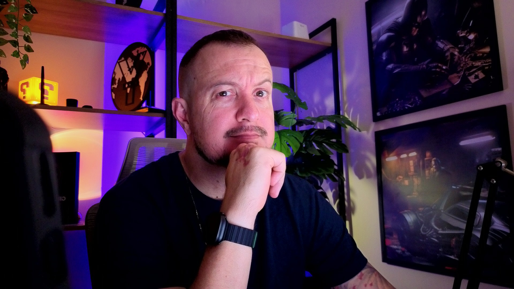

foto.jpgBastidor Criativo
Bastidores do meu home studio que me fazem faturar 30k+ mês com design de produto e IA
Entre no grupo para receber insightz e os links das lives semanais.
Entrar no grupo
foto.jpgBastidor Criativo
Entre no grupo para receber insightz e os links das lives semanais.
Entrar no grupo